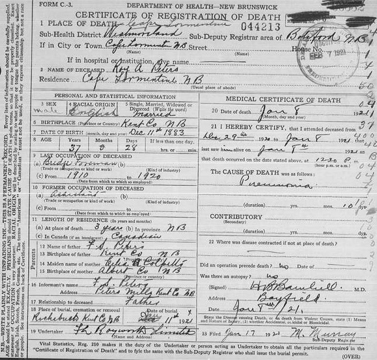
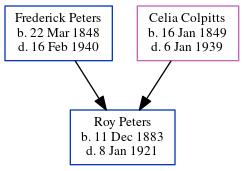

Roy Arthur Peters 1883 - 1921
[ Home ] | [ Calendar ] | [ Surnames Index ] | [ Census Index ] | [ Family History ]The child of Frederick Peters (a miller) and Celia Colpitts, Roy Peters, the third cousin twice-removed on the father's side of Nigel Horne, was born in New Brunswick, Canada on Dec 11, 18831,2,3.
During his life, he was living in Richibucto, Kent, New Brunswick in 18911 and in 19012 (the same place as his father had been living in 1871); and in Kent, New Brunswick, Canada in 19113.
He died on Jan 8, 1921 in Westmorland, New Brunswick, Canada4 (pneumonia) and was buried in Richibucto, New Brunswick after Jan 8, 19214.
Parents
- Frederick Smallwood was born on Mar 22, 1848
- Celia Ann was born on Jan 16, 1849
Citations
- 1891 Census of Canada Ancestry.com Operations Inc (Marital Status: SingleRelation to Head of House: Fils)
- 1901 Census of Canada Ancestry.com Operations Inc (Marital Status: SingleRelation to Head of House: Son)
- 1911 Census of Canada Online publication - Provo, UT, USA: Ancestry.com Operations Inc, 2006. .Original data - Library and Archives Canada. Census of Canada, 1911. Ottawa, Ontario, Canada: Library and Archives Canada, 2007. http://www.collectionscanada.gc.ca/databases/census-19 (Marital Status: SingleRelation to Head of House: Son)
- Canada, Find A Grave Index, 1600s-Current Ancestry.com Operations, Inc.
- Canada Census 1911 - Findmypast (was the son of the head of the household)
Media
1891 Census

Roy Arthur Peters death certificate

Canada Census 1911 - CAN/CENSUS/1911/01307419
Family Tree
Generated by ged2site. Last updated on Jun 11, 2024